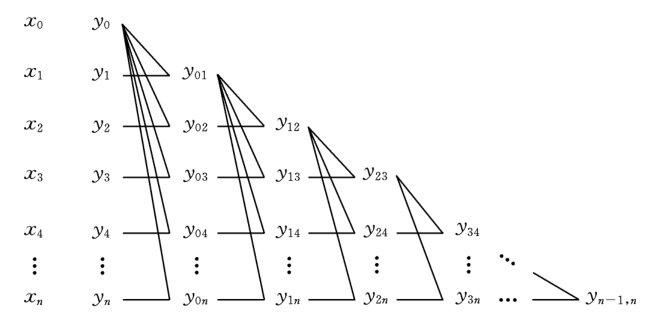
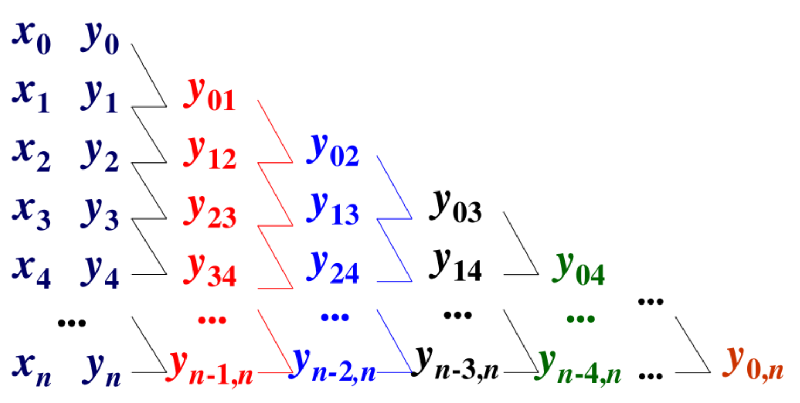

一致逼近
∣∣f(x)−g(x)∣∣∞=maxa≤x≤b∣f(x)−g(x)∣
平方逼近
∣∣f(x)−g(x)∣∣2=∫ab∣f(x)−g(x)∣2dx
插值平均
y=i=0∑nλiyi
代数精度 §
m阶精度 满足次数≤m的幂函数 即
λ0+λ1=1λ0x0+λ1x1=xλ0x02+λ1x12=x2...
多点插值 §
y=i=0∑n(j=0j=i∏nxi−xjx−xj)yi
三点为例
y=(x0−x1)(x0−x2)(x−x1)(x−x2)y0+(x1−x0)(x1−x2)(x−x0)(x−x2)y1+(x2−x0)(x2−x1)(x−x0)(x−x1)y2
Aitken逐步插值算法 §
化为两点插值
(x0,y0)(x1,y1)(x2,y2)先用0分别和1，2插值得到y01,y02
(x1,y01)(x2,y02)再插值得到结果
fk(xi)=xk−1−xix−xifk−1(xk−1)+xi−xk−1x−xk−1fk−1(xi),(i≥k)
k对应列数

按照与所求点的距离由近到远排列 逐行生成插值表 当该行最后一个元素达到精度要求停止
Nevilles

Ii0,ik+1(x)=Ii0,ik(x)xi0−xik+1x−xik+1+Ii1,ik+1(x)xik+1−xi0x−xi0
Taylor插值 §
在所求点有一定精度
pn(x)=f(x0)+f′(x0)(x−x0)+2f′′(x0)(x−x0)2+...+n!f(n)(x0)(x−x0)n
Lagrange插值 §
过一系列的点
pn(x)=k=0∑nλk(x)f(xk)
λk(x)=j=0j=k∏nxk−xjx−xj
λk(xk)=1λk(xj)=0,j=k
lambda k为n次式
Hermite插值 §
例1 §
作二次式满足
p2(x0)=y0,p2′(x0)=y0′,p2(x1)=y1
法1 待定系数
法2 余项校正
先作p1过两点
p1(x)=x0−x1x−x1y0+x1−x0x−x0y1
再加上余项
p2(x)=p1(x)+c(x−x0)(x−x1)
法3 基函数
为简化，先设x0=0,x1=1
p2(x)=y0φ0(x)+y1φ1(x)+y0′ψ0(x)
φ0(0)=1,φ1(1)=1,ψ0′(0)=1,φ0(1)=φ0′(0)=0φ1(0)=φ1′(0)=0ψ0(0)=ψ0(1)=0
其中基函数均为二次式
当x0,x1为任意节点时
p2(x)=y0φ0(hx−x0)+y1φ1(hx−x0)+hy0′ψ0(hx−x0)
t=hx−x0,h=x1−x0
例2 §
作三次式满足
p3(x0)=y0,p3′(x0)=y0′,p3(x1)=y1p3′(x1)=y1′
运用基函数方法
p3(x)=y0φ0(hx−x0)+y1φ1(hx−x0)+hy0′ψ0(hx−x0)+hy1′ψ1(hx−x0)
φ0(0)=1,φ1(1)=1,ψ0′(0)=1,ψ1′(1)=1,φ0(1)=φ1′(0)=φ1′(1)=0φ1(0)=φ1′(0)=φ1′(1)=0ψ0(0)=ψ0(1)=ψ0′(1)=0ψ0(0)=ψ1(1)=ψ1′(0)=0
一般形式Hermite插值多项式
p2n+1=i=0∑n[φi(x)yi+ψi(x)yi′]
n=1 两个点 三次式
φ0(x)=(1+2x1−x0x−x0)(x0−x1x−x1)2φ1(x)=(1+2x0−x1x−x1)(x1−x0x−x0)2ψ0(x;)=(x−x0)(x0−x1x−x1)2ψ1(x)=(x−x1)(x1−x0x−x0)2
分段插值 §
S3(xi)=yi,S3′(xi)=yi′,i=0,1,⋯,n
在子段[xi,xi+1]上，
Si(x)=φi(hix−xi)yi+φi(hix−xi)yi+1+hiφi(hix−xi)yi′+hiφi(hix−xi)yi+1′,xi⩽x⩽xi+1
hi=xi+1−xi
样条插值 §
三次样条 §
称S3(x)为具有分化Δ的三次样条，如果它在每个子段上都是三次式，且在内节点上具有直到二阶的连续导数
S3(xi−0)=S3(xi+0),S3′(xi−0)=S3′(xi+0),i=1,2,⋯,n−1S3′′(xi−0)=S3′′(xi+0),
先考虑函数值和一阶导数，即计算方法
S3(x)=φi(hix−xi)yi+φi(hix−xi)yi+1+hφi(hix−xi)mi+hφi(hix−xi)mi+1,xi<x<xi+1
S3′′(x)=hiz6[2(hix−xi)−1]yi−hi26[2(hix−xi)−1]yi+1+hi1[6(hix−xi)−4]mi+hi1[6(hix−xi)−2]mi+1
S3′′(xi)S3′′(xi+1)=6hi2yi+1−yi−hi4mi+2mi+1=−6hi2yi+1−yi+hi2mi+4mi+1
保证二阶导数连续
hi−1mi−1+2mi+hi2mi+mi+1=3(hi−12yi−yi−1+hi2yi+1−yi)
拟合 §
最小二乘法
实测值为yi
定义残差
ei=yi−y^i
使残差平方和（总误差）最小
对于直线拟合
Q=i=1∑N[yi−(a+bxi)]2
使得总误差最小
∂a∂Q=0,∂b∂Q=0{aN+b∑xi=∑yia∑xi+b∑xi2=∑xiyi
对于多项式拟合
Q=i=1∑N(yi−j=0∑majxij)2
∂ak∂Q=0,k=0,1,⋯,mi=1∑N(yi−i=0∑najxij)xik=0,k=0,1,⋯,m
⎩⎨⎧aiN+a1∑xi+⋯+an∑xin=∑yiai∑xi+a1∑xi2+⋯+an∑xin+1=∑xiyi⋮ai∑xin+ai∑xin+1+⋯+an∑xi2n=∑xinyi
正则方程组